最低限必要なツールの取得
まずはC言語プログラムをコーディングして実行するために必要な変換ソフトが必要になります。
プログラムが実行形式になるまでの過程 |
C言語はコンパイル言語といい、コンパイラというものが必要になります。
Visual Studio、gcc、Borland C++などです。
C言語コンパイラを既にインストールして準備万端な方はこのセクションを飛ばして次のぺージに進んでもらって結構です^^
次の記事：2. コンパイルとリンク
おすすめのコンパイラはgcc(MinGW)です。
私自身はMicrosoftのVisual Studioを使用しているのですが、ソフト自体に余計な機能が満載で設定項目が多く最初に触るとちょっとよく分からないので注意して下さい。
ここではgccの導入を解説していきます。
(現在主流のOSがWindows10 64bitなので、64bit版のソフトインストールを解説します)
GCCのダウンロード～インストール
Googleなどで「mingw w64 ダウンロード」キーワードで検索していきます。
するとインストール解説サイトがたくさん出てくると思います。みなさん親切に解説してくれます^^
どのぺージからでもいいので、解説通りに進んでインストールを進めてみて下さい。
私の環境の場合、「mingw-w64-install.exe」でのインストールでは問題が発生するようで、別のインストーラを使用しました。
以下にウェブサイトから同じMinGWのインストーラが取得可能です。
Download File List - MinGW - Minimalist GNU for Windows - OSDN
| 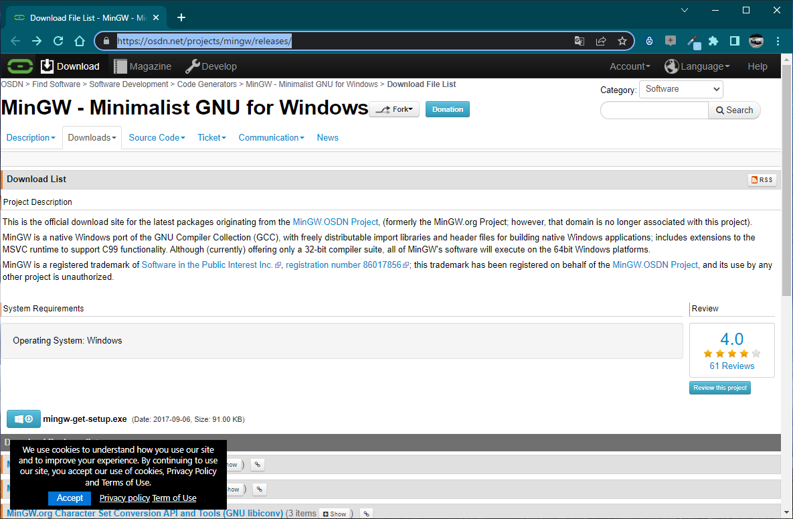 |
MinGWのインストーラを入手。 |
"mingw-get-setup.exe"の左のアイコンをクリックすると自動的にぺージが切り替わって、ダウンロードが開始されます。
| 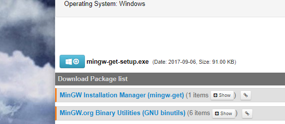 |
適当な場所へ保存します。
| 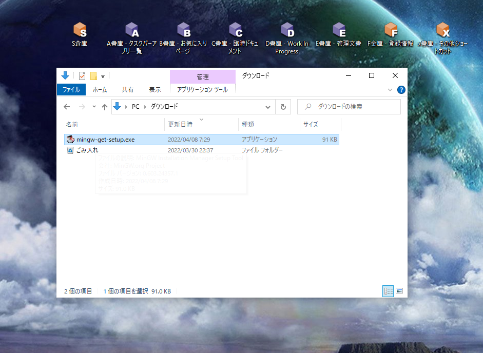 |
ダウンロードしたインストーラを実行してインストールを開始しましょう。
重要：「.exe」が付いてない！なぜ？
これはファイル拡張子です。
ファイル拡張子は表示させておいたほうが良いかと思います。色々とファイルの区分を認識したい事は多々ありますので。
エクスプローラーのタブから「表示」を選択すると「ファイル名拡張子」があります。
ここにチェックマークを入れて下さい。
これで見えるようになります。
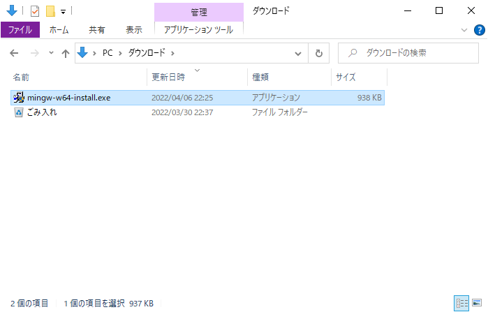
インストーラを起動すると以下のようなウインドウが表示されます。
「Install」をクリック。
| 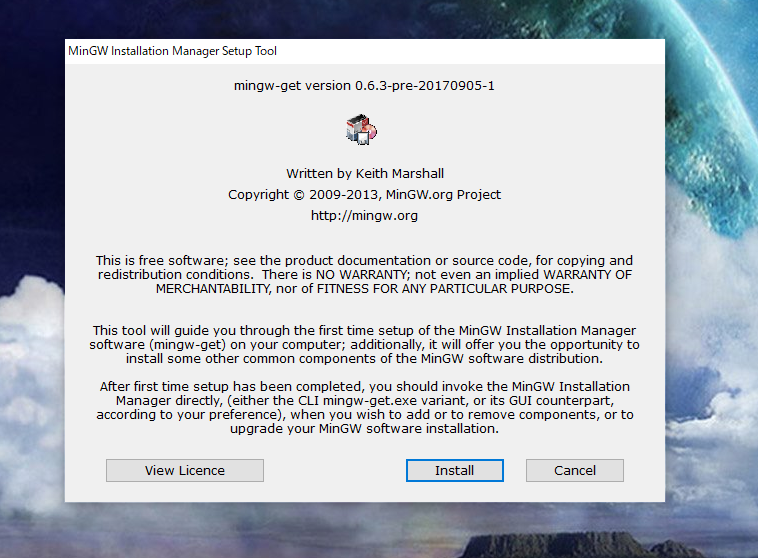 |
「Continue」をクリック。
| 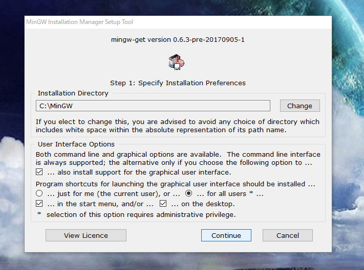 |
一時ファイルなどのダウンロードが開始されます。
とりあえず待ちます。
| 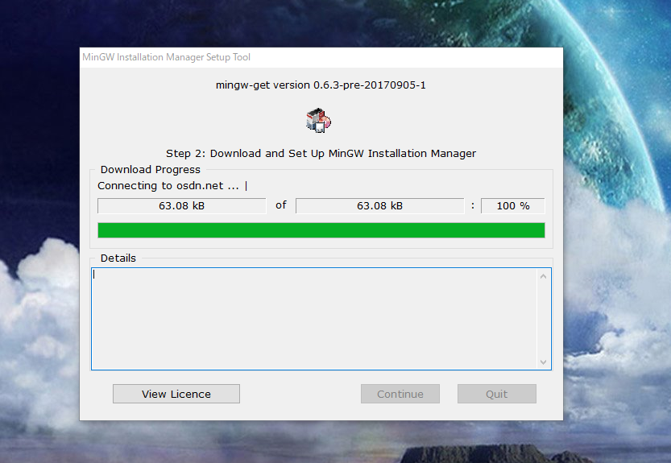 |
すると以下の画面が表示されます。(画像が粗い場合はクリックして拡大して下さい)
これは「MinGW Installation Manager」というアプリで、この時点でスタートメニューなどから起動できるようになります。
ここで必要なコンパイラを選択し、インストールを開始する流れとなります。
今回はC言語のコンパイルを行うため、基本パッケージの「mingw32-base-bin」と、「mingw32-gcc-g++-bin」を選択していきましょう。
| 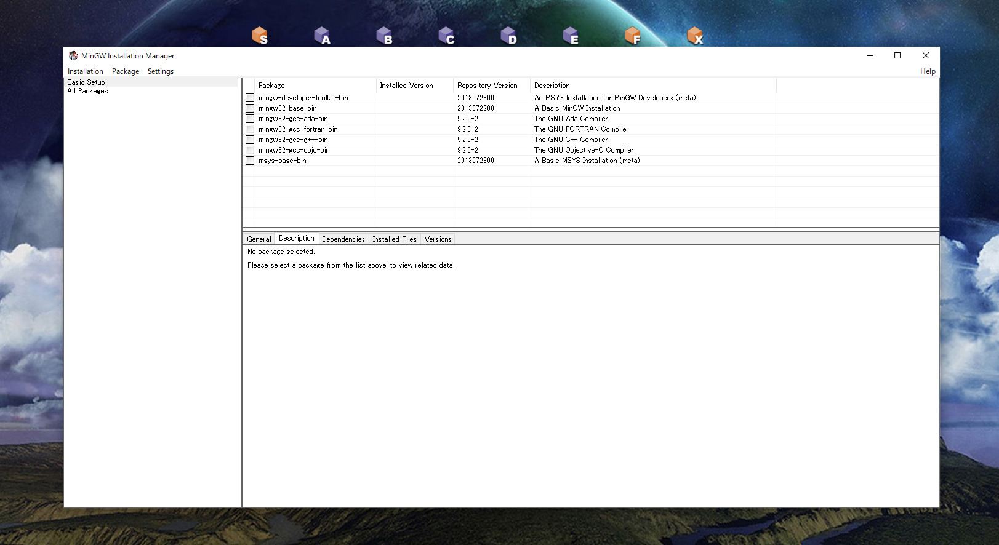 |
{kind=link}
チェックマークを付けるには「Mark for Installation」をクリックして下さい。
| 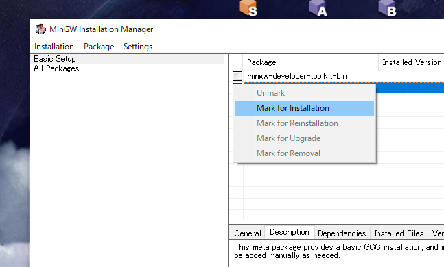 |
次にメニューバーの「Installation」→「Apply Changes」をクリックします。
| 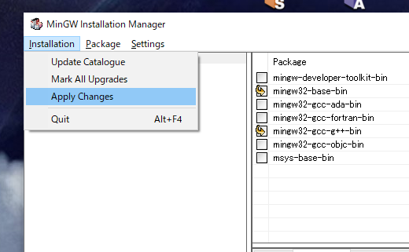 |
何やら書かれていますが、そのまま「Apply」をクリックしましょう。
| 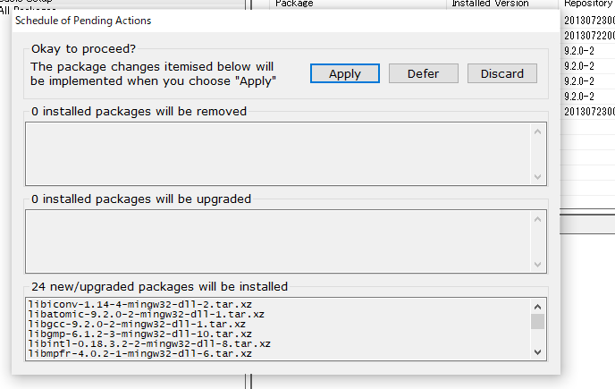 |
パッケージのインストールが開始されるので、ひたすら待ちます。
| 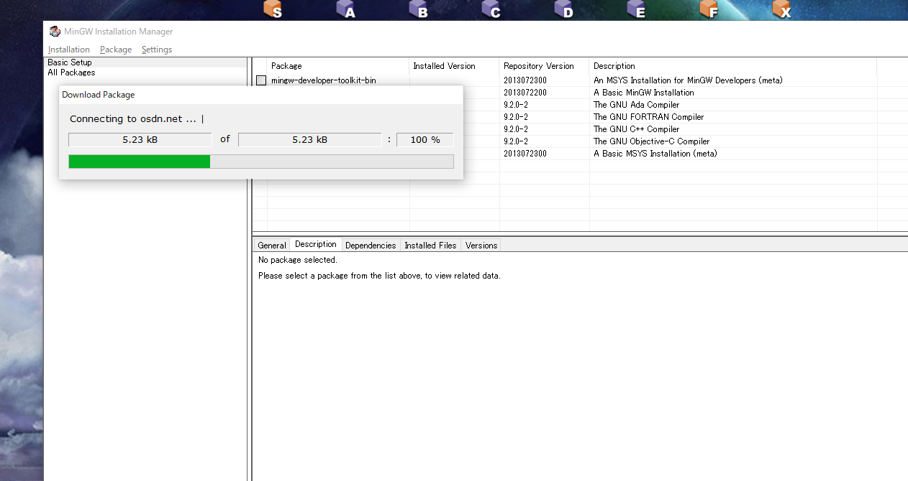 |
正常にインストールが成功すると以下の画面が表示されるはずです。
この段階でCコンパイラがインストール出来ました。
「Close」をクリックし、MinGW Installation Managerを終了しましょう。
| 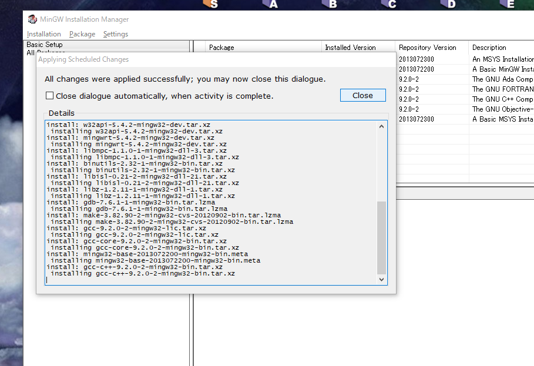 |
環境変数の設定
コンパイラのインストールを行ったら、もう一つだけ設定しておきたい内容があります。
以下の手順で進めて下さい。
Windowsのスタートメニューを表示します。
| 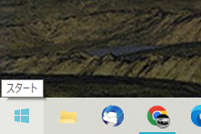 |
「環境変数を編集」を起動します。
「かんきょうへんすう」などをタイプすると通常出てきます。
| 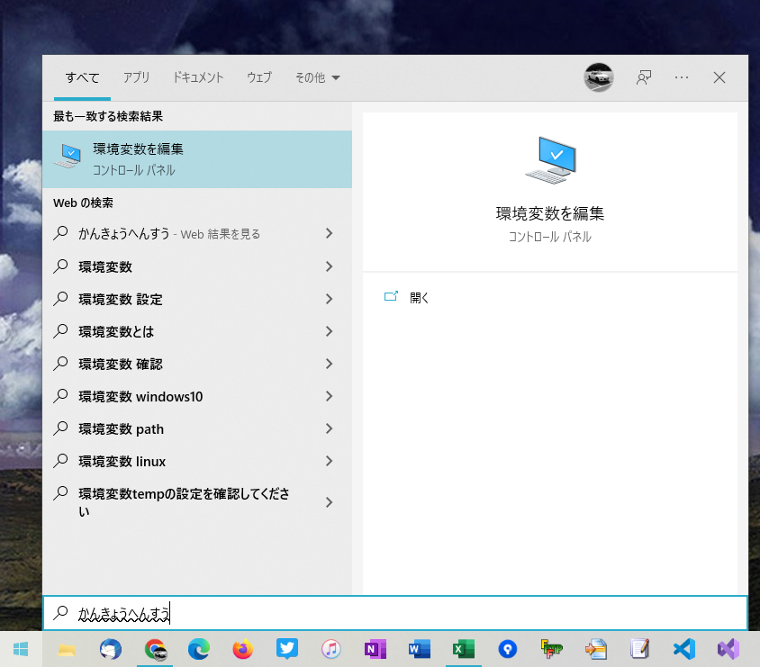 |
下記の画面が表示されたら「環境変数(N)...」をクリック。
| 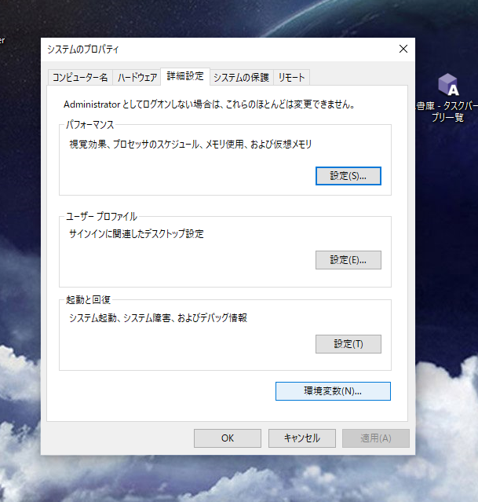 |
システム環境変数の欄から変数「Path」を探し、クリックして選択、「編集(I)...」をクリックします。
| 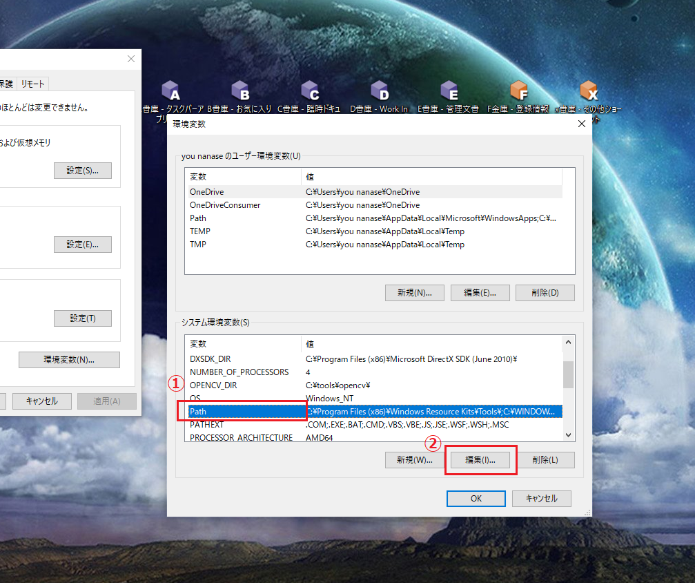 |
環境変数名の編集画面が開くので、左のリストの空いている部分をクリックしてフォルダの場所を書き込みます。
フォルダはMinGWのインストール先フォルダのbinフォルダを指定します。
通常は「C:\MinGW\bin」のはずですが、不安ならエクスプローラーで確認してみましょう。
| 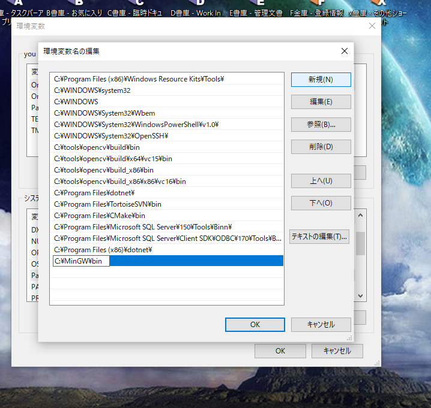 |
| 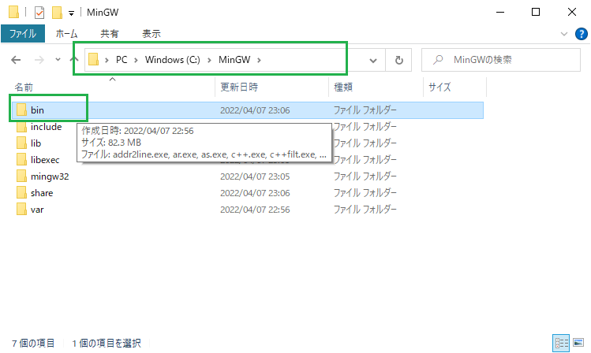 |
アドレスバーをクリックするとフォルダのパス(場所)が確認できる。 |
パスを書き込んだら、「OK」ボタンを押して画面を全て閉じます。
ちなみにこの登録作業は一般的に「PATHを通す」「環境変数Pathを設定」と言います。
他のウェブサイトのインストール手順などでも紹介されているはずですので、気になる方は調べてみてください^^
コマンドプロンプト
コンピュータが今でこそカラフルな写真が表示された上のアイコンをクリックして、インターネットやファイル管理ができる時代になりましたが、
ずっと以前のパソコン(Windows含め)は全て文字を打ってプログラムを起動したりしていました。
一般的に現在主流のパソコンはGUI(グラフィカル・ユーザー・インターフェース)と呼ばれ、ウインドウが沢山あり、直感的に物に触れる形になっています。
文字を打ってアプリなどを起動するパソコンはCUI(キャラクター・ユーザー・インターフェース)と言います。
今からするととても信じられないかもしれませんが、アプリを立ち上げるのもアプリの場所まで全て名前をタイピングして実行していたのです。
その名残りを今のGUIパソコンでも使う事ができます。その代表的な機能が「コマンドプロンプト」です。
プログラミングの習得をする上でほぼ必ず知っておかなければならない知識だと思いますので、ちょっとだけ触っておきましょう。
え？コマンドプロンプト知ってるー、コマンドプロンプトなんて余裕じゃん(^^♪
という方もいるかもしれませんが、とりあえず実行手順を解説していきます。
コマンドプロンプトは「cmd.exe」という名前のアプリとなります。
WindowsキーとRキーを同時押しすると、画面左下辺りにテキスト入力欄が出てくるので、ここに「cmd.exe」と入力してEnterキーで実行します。
| 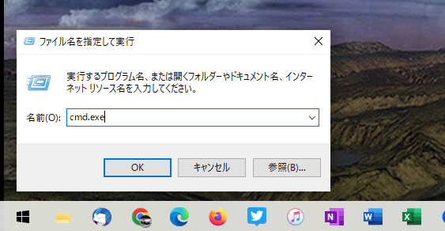 |
するとおもむろに黒い画面が出てきます。
これが噂のコマンドプロンプトになります。
「gcc --version」と入力して下さい。誤字脱字がないように注意しましょう。
入力したらEnterキーを押します。
| 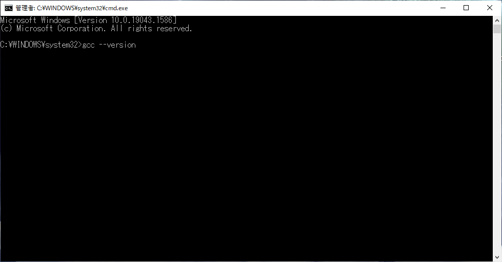 |
以下の文字が出力されたら、MinGWのインストールが正常に出来ている状態です。
実はこの情報を調べるためコマンドプロンプトを使いました。
もし「操作可能なプログラムまたはバッチ ファイルとして認識されていません」などのメッセージが出る場合は、環境変数の設定などを見直してみてください。
| 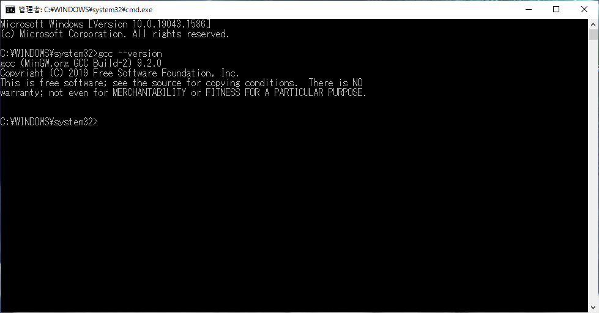 |
C言語のファイルをコンパイル（およびリンク）するためにこのコマンドプロンプトを今後使いますので、覚えておきましょう。
コンパイルとリンクについては次のセクションで説明します。
一般的にプログラムを実行するにはコンパイルのようなプログラミング言語から機械語に変換する作業が必須になります。
この作業は通常人間がする事はないので、これを担ってくれるのが「コンパイラ」という事になります。
コマンドプロンプトを終了する時は「exit」を入力してEnterキーを押してください。
 |
コラム：コマンドプロンプトは✕ボタンで閉じちゃいけない？
コマンドプロンプトは終了コマンド（exit）があります。なぜわざわざexitと打って終了するのでしょうか？
exitを打ってコマンドプロンプトを終了させるやり方は一般的な終了のやり方です。✕はアプリを強制的に終了させます。
どういう違いがあるかと言えば、電源ボタンを押して電源OFFにするのがexit、電源ケーブルを引っこ抜いて電源を遮断するのが✕ボタンです。
これはいずれ重要になる情報です。
よく考えてみて下さい。CUIの時代にGUI的な✕ボタンがあるはずもないのですから、終了するにはexitと書くしかないのです。
以上がメインの環境構築の作業となります。
次はいよいよC言語プログラムを書いていきます。